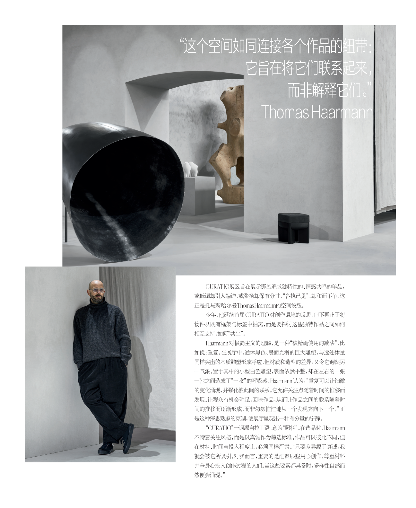

CURATIO展区旨在展示那些追求独特性的、情感共鸣的statement piece，意外的是，这一件件性格鲜明的单品，或低调却引人端详，或张扬却保有分寸，“各执己见”，却和而不争。
这正是 Thomas Haarmann 的空间设想。今年，他延续首届 CURATIO 对创作语境的反思，但不再止于将物件从既有框架与标签中抽离，而是要探讨这些独特作品之间如何相互支持，如何“共生”。
Haarmann 对极简主义的理解，是一种“被精确使用的减法”，比如说：重复。在展厅中，通体黑色、表面光滑的巨大雕塑，与远处体量同样突出的木质雕塑形成呼应，但材质和造型的差异，又令它迥然另一气派。置于其中的小型白色雕塑，表面依然平整，却在左右的一张、一弛之间造成了“一收”的呼吸感。
Haarmann 认为，“重复可以让细微的变化涌现，并强化彼此间的联系。它允许关注点随着时间的推移而发展。让观众有机会驻足，回味作品，从而让作品之间的联系随着时间的推移而逐渐形成，而非匆匆忙忙地从一个发现奔向下一个。”正是这种深思熟虑的克制，使展厅呈现出一种有分量的宁静，让观众舒缓，让作品可以被清晰看见。
“CURATIO”一词源自拉丁语，意为“照料”，尤其指向对灵魂的照料，一如Haarmann的温情：整个展会中，这是唯一一个印制了完整品牌清单的展区。在选品时，他不特意关注风格，而是以真诚作为筛选标准。作品可以彼此不同，但在材料、时间与投入程度上，必须同样严肃。“只要差异源于真诚，我就会被它所吸引。对我而言，重要的是汇聚那些用心创作、尊重材料、并全身心投入创作过程的人们。当这些要素都具备时，多样性自然而然便会涌现。”